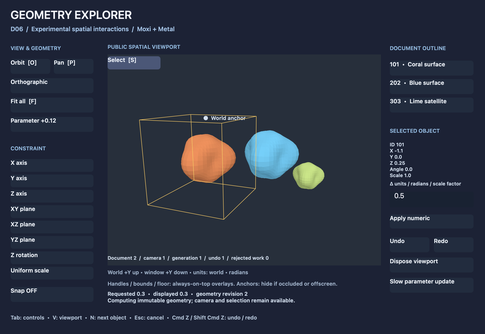
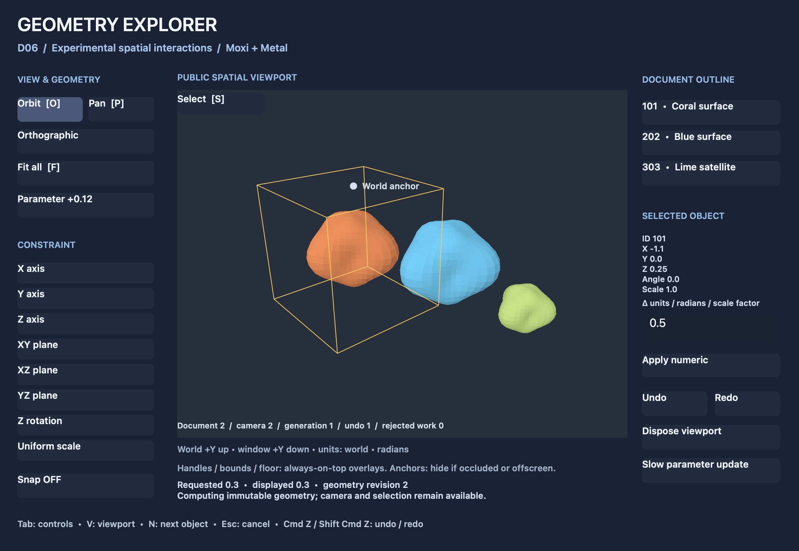
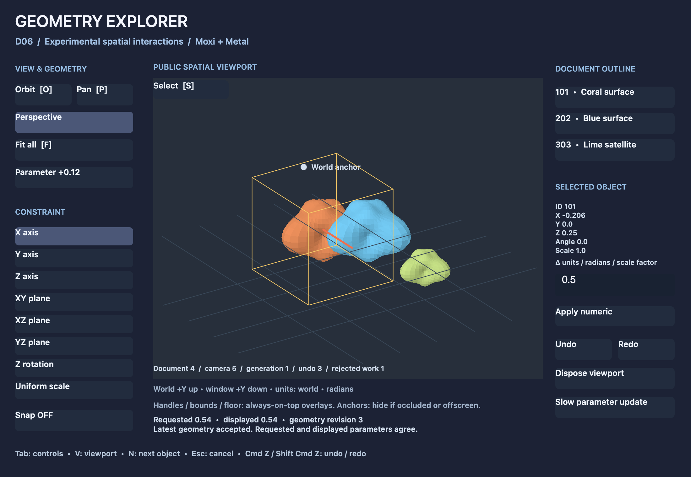
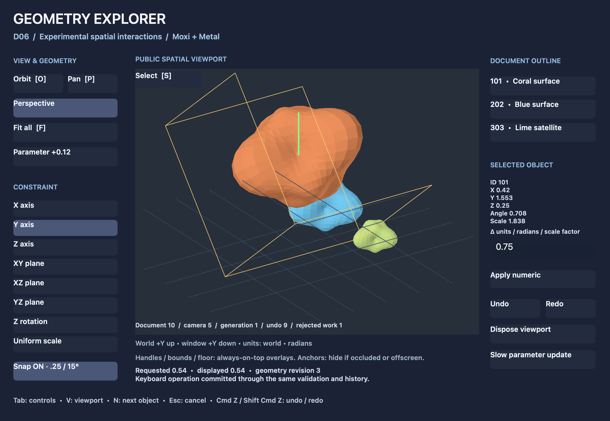
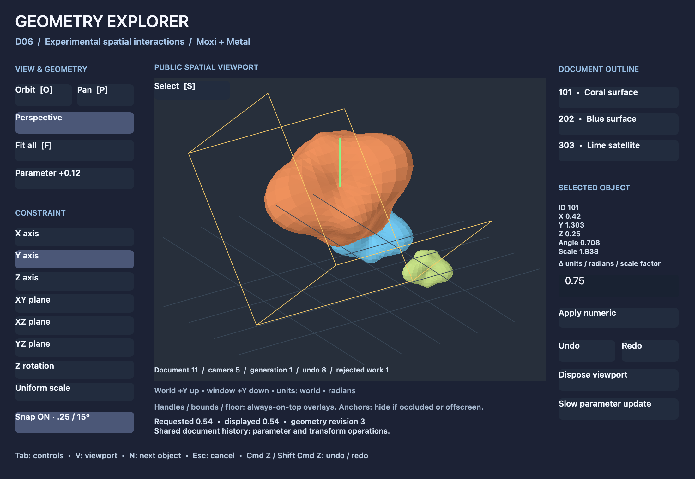

Generated geometry through public Mojo Action: Launch native explorer Expected: Three generated surfaces, stable IDs, world anchor, outline and inspector
initial · offscreen-render · 2200 × 1520 pixels

Asynchronous parameter result Action: Activate Parameter +0.12; await current completion Expected: Actual vertices change; requested and displayed parameters agree
result · offscreen-render · 2200 × 1520 pixels

Orbit with retained geometry Action: Drag Orbit from (600,350) to (660,375) Expected: Camera changes; zero mesh uploads or control rebuilds during drag
Ray selection and projected annotation Action: Select; click the projected center of object 202 Expected: Nearest triangle selects a stable ID; inspector and bounding outline agree
Navigate while geometry is pending Action: Request a 700ms update, supersede it, then press Right in viewport Expected: Camera advances using the last accepted mesh; requested and displayed values differ
Stale completion rejected Action: Poll until first old revision completes while newer work is pending Expected: Rejected count increases without publishing old geometry
recovery · offscreen-render · 2200 × 1520 pixels

X axis preview Action: Fit, select 101, drag projected X handle 50 points Expected: Inspector and bounds show preview; committed history unchanged until pointer up
Cancel restores committed document Action: Escape during snapped preview Expected: Preview disappears without a history entry
recovery · offscreen-render · 2200 × 1520 pixels

Native numeric field and keyboard operation Action: Enter 0.75 through native text callback, Enter, Escape, Up Expected: Numeric and key routes use the same validated operation and shared history
result · offscreen-render · 2200 × 1520 pixels

Shared undo Action: Undo last keyboard operation Expected: Prior committed transform restored; parameter edits share this history
Recreate under a new generation Action: Recreate and wait for accepted generation Expected: Retained document and camera render again; old work cannot resurrect resources
recovery · offscreen-render · 2200 × 1520 pixels
Contact sheetReproduce
python3 examples/spatial-explorer/gallery.py
Real Moxi AppKit+Metal content captured with cacheDisplay. Synthetic native event-queue replay; offscreen-render, not compositor/native-window or human input evidence. Experimental CPU readback; no production renderer or performance acceptance claim. VoiceOver paused.
Screenshots show recorded states. They do not establish latency, scientific accuracy, physical IME, screen-reader behavior, or human usability.